Designing an investment app
for web and phone
Clients of Cambridge Investment Research had to come into the office to manage their money. As a freelancer, I was the only designer on Widget Cloud, a dashboard for web and phone where they can see every account, plan for retirement, share documents and reach their advisor.
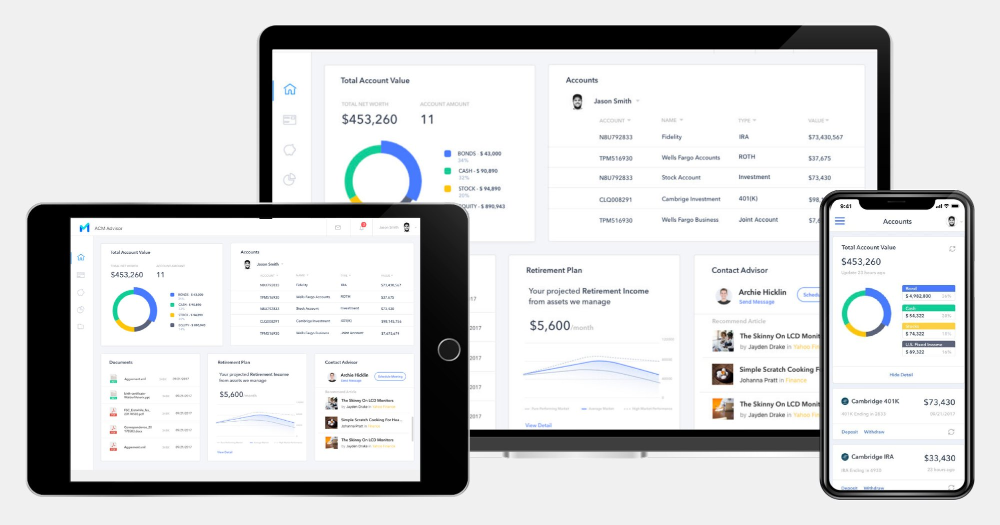
Investing meant a trip to the office
Cambridge Investment Research is a broker dealer and asset management firm that manages more than $95 billion in assets. Its clients had no clear, easy way to see their accounts or their documents, so they came into the office to manage their investments, and getting hold of a financial advisor was hard.
For the firm
Raise customer satisfaction and attract younger clients.
For clients
Manage every account from a phone or a desktop, without a trip to the office.
For the design
A clear, modern interface that keeps a complex product easy to read.
The only designer
I worked freelance with the client’s product owner and their engineering team, and owned the design end to end: research, information architecture, interaction and visual design, then usability testing, design QA and support for the engineers during the build.
Four things made it hard: a lot of complex features to fit into a dashboard of widgets, a younger audience that expected the app to feel familiar and look good, important financial documents that had to be shared and transferred securely, and a twelve week window before the deadline.
Six pain points, six answers
The firm’s main clients were successful millennials who wanted to manage their money through technology. I studied how Acorns, Betterment, Invstr and Wealthbase handle investing, then interviewed existing clients and new investors. Six pain points came up, and each one became a feature.
Existing clientsKept in the dark on how their investments fit together
A dashboard that brings every account together and highlights performance
Existing clientsConfused about the state of their retirement plan
Charts that show where retirement stands and what it will take to reach the goal
Existing clientsNo easy, safe way to share documents with an advisor
Secure document sharing, with every document tracked in one place
Existing clientsScheduling a meeting with an advisor was a hassle
Real time chat with their advisor, and meetings booked in a few clicks
New investorsOverwhelmed, and not sure where to start
A personal, step by step onboarding
New investorsUnsure how to make investment decisions alone
Portfolio recommendations that fit their needs and interests
From whiteboard to wireframes
I sketched the main screens on a whiteboard first: the onboarding questionnaire, the dashboard, accounts, documents and retirement planning. Then I mapped the UI flow for web and mobile, so everyone on the team understood how the app fit together.
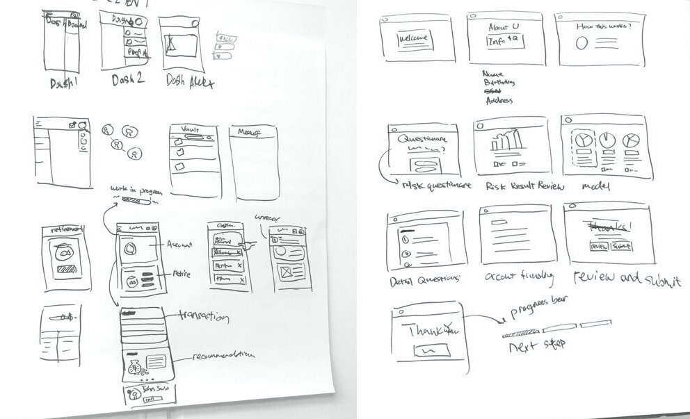
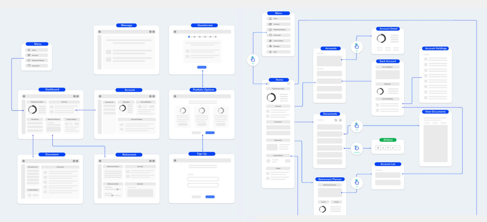
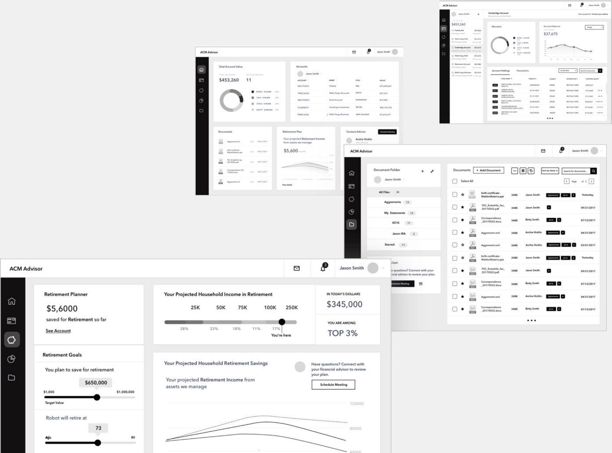
Every account in one place
New investors start with a short questionnaire about their goals. It recommends a portfolio that fits their needs and interests, and it saves advisors the time they used to spend training new investors.
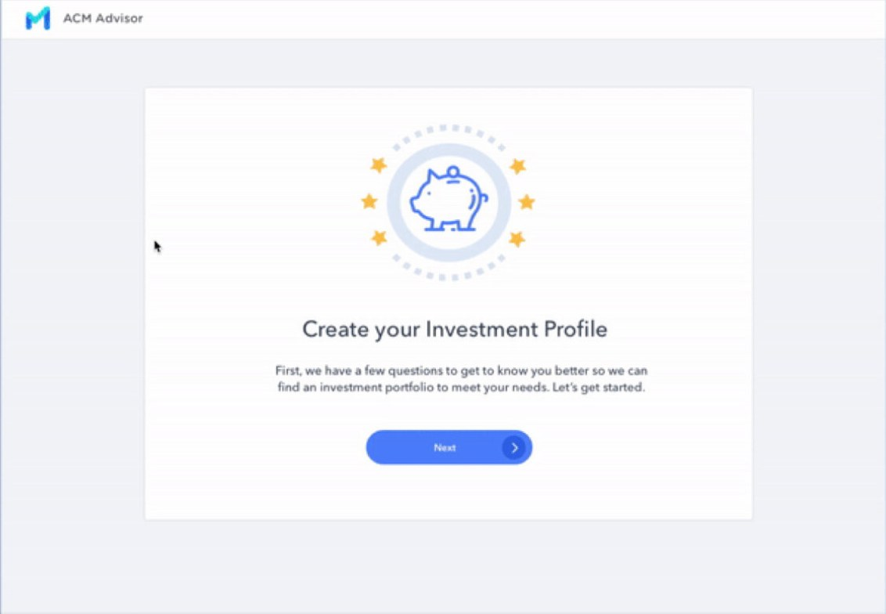
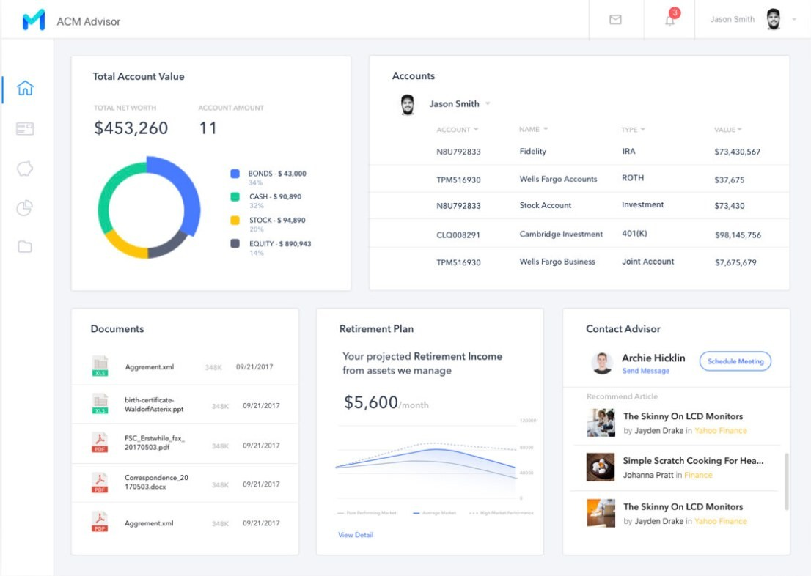
The home dashboard is made of interactive widgets that each person can arrange, so what they care about comes first. Accounts sit in one list, and a meeting with the advisor is a couple of clicks away.
Setting a retirement goal is a drag on a slider, and the charts show where every retirement account stands against it. Documents can be shared with the advisor in real time and tracked in one place.
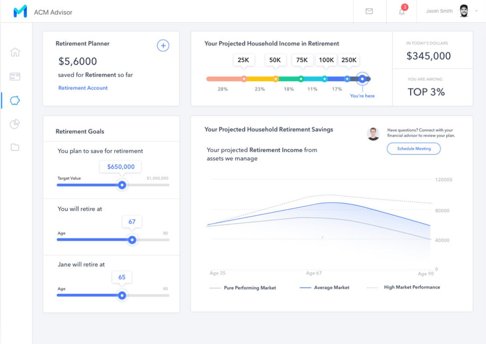
Designed for the phone too
The firm wanted younger clients, so the phone mattered as much as the desktop. The web app is responsive, and where a phone needed something different, I changed the design: onboarding asks one question per screen with large choices to tap, portfolios and accounts become cards you scroll through, and the retirement planner moves into tabs.
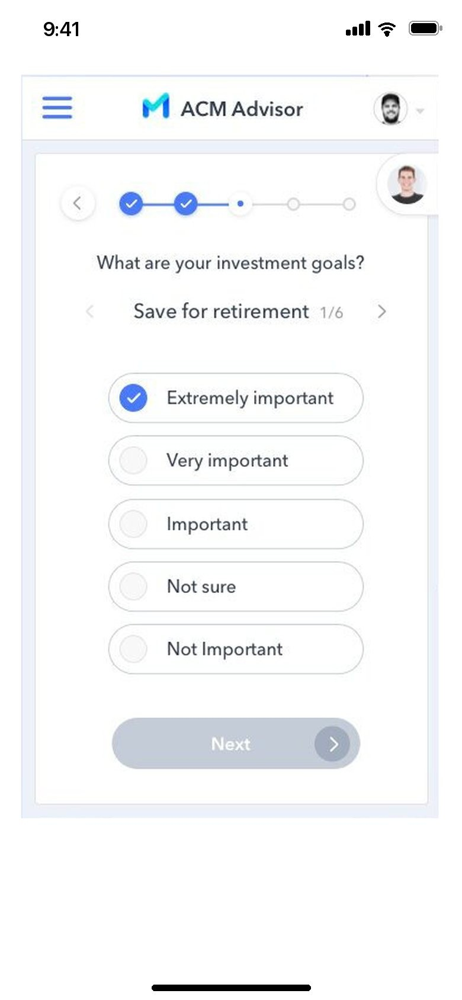
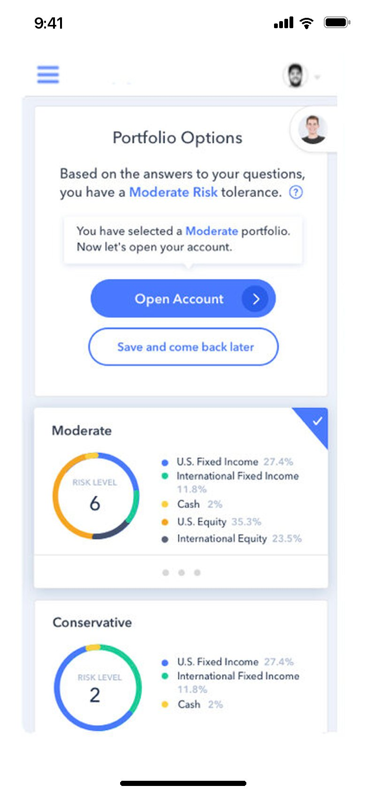
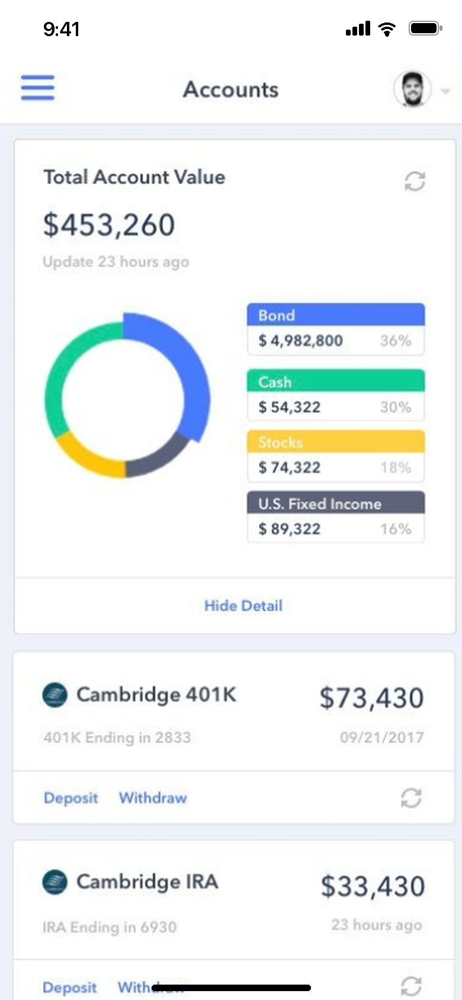
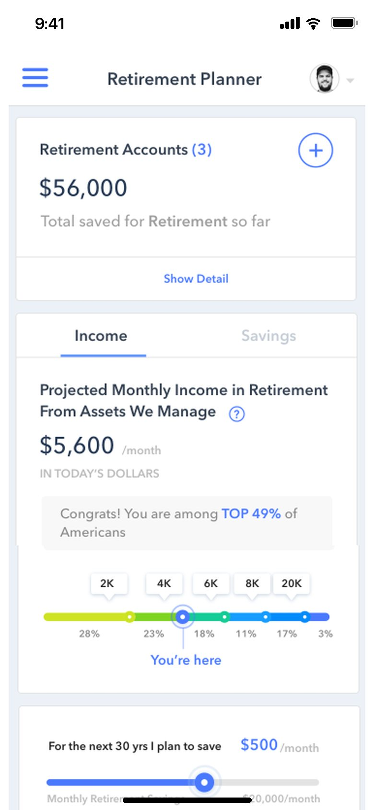
Launched on time
Working closely with the engineers, I handed off the interactive prototype on time. The client showed it to their front line salespeople and to prospective clients, and the feedback was strong, especially for the mobile version. Widget Cloud launched in July 2022.